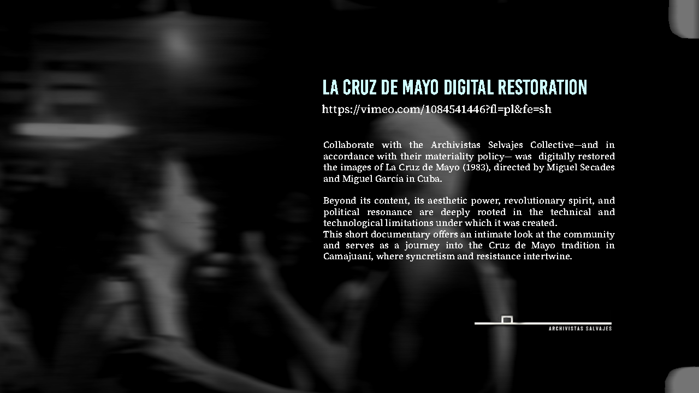

Research & Preservation Works
This section gathers restoration, archival and research-based projects developed with film collections, institutions and collaborative initiatives. You can briefly introduce what types of works appear here: digital restorations, research on unfinished films, collaborations with archives, etc.



[Another Research / Preservation Project]
Aqui podes escrever uma breve descrição de outro trabalho de investigação ou preservação. Podes duplicar esta secção e, se quiseres, abaixo dela voltar a usar uma estrutura semelhante à media-block (imagem + vídeo + stills).